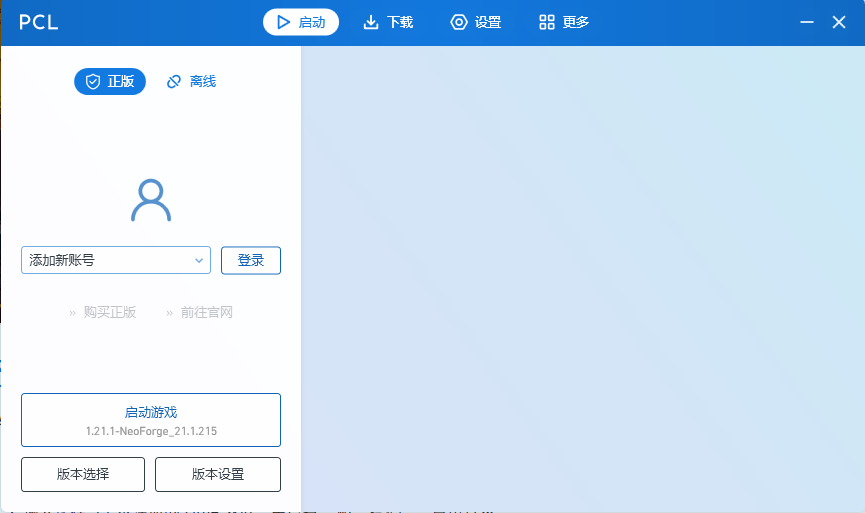
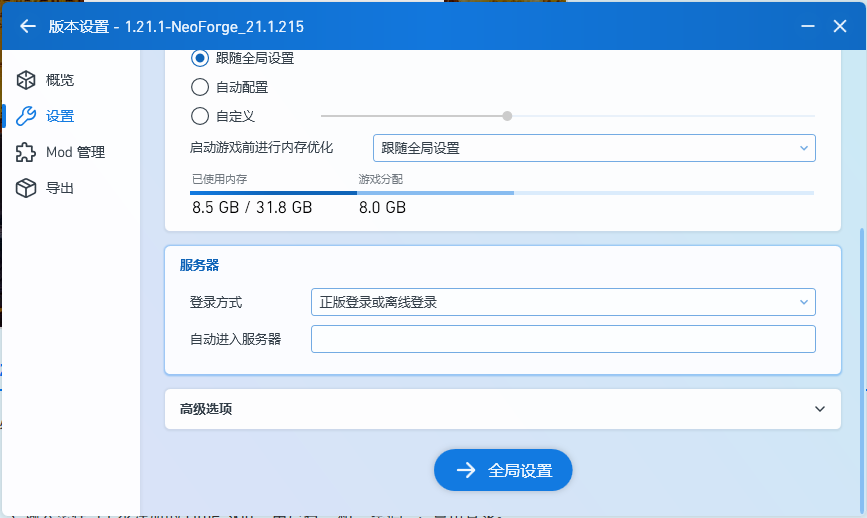
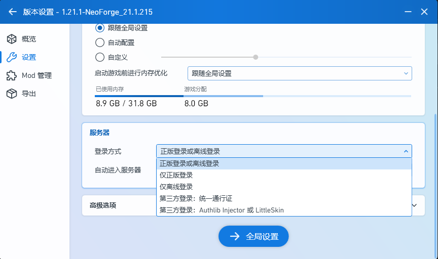
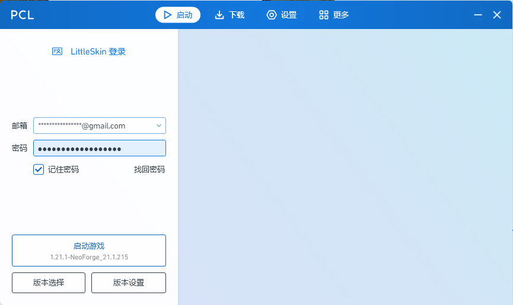

🚀 [Your Server Name] Modpack Installation Guide (NeoForge)
Welcome to our private server! This guide will detail how to install the **NeoForge core** and all required **mods**. You can choose to use either the **Official Launcher** or the **PCL2 Launcher** to complete the installation.
Please Note: Our server core version is **Minecraft [Your Server Version, e.g., 1.21.1]**. Ensure all installations are based on this version.
1️⃣ Step One: Prepare Necessary Files
1.1 Java Environment:
Ensure your computer has the required Java version for the server, e.g., **Java [Version number, e.g., 17 or 21]**.
- **Download Link:** Official Java Download (21)
1.2 NeoForge Installer:
We need the NeoForge installer to inject mod-loading capability into Minecraft. Download this file.
- **Download Link:** NeoForge Official Download (Select [1.21.1])
- 💡 **Hint:** This should be a `.jar` file after download.
1.3 Modpack:
Download our server modpack (contains all necessary `.jar` files).
- **Download Link:** Click to download the modpack
2️⃣ Step Two: Choose Launcher and Install NeoForge Core
Please choose your preferred launcher below and follow the steps:
A. Official Launcher (Minecraft Launcher)
Step A.1: Install NeoForge
- **Close** the Official Launcher.
- **Run** the NeoForge `.jar` installer you downloaded in Step 1.2.
- In the popup window, select **“Install client”**, and ensure the installation path is your default Minecraft path. Click **“Proceed”**.

Step A.2: Check Installation
- Open the Official Launcher.
- On the **“Installations”** page, you should see a new profile named
NeoForge [Version number]. - **Launch** this new profile for the first time to allow it to download all files. After reaching the main menu, **close the game**.

Step A.3: Locate the Mods Folder (Crucial)
- Go back to the launcher **“Installations”** page and click the **Folder icon** next to your NeoForge profile.
- In the opened folder, find and enter the folder named **
mods** (create one manually if it doesn't exist).

B. PCL2 Launcher
Step B.1: Install PCL2
Download and extract the PCL2 Launcher to a location you can easily find.
- **Download Link:** PCL2 Official Website Download
Step B.2: Create New Instance and Install Core
- Run PCL2 and click **“下载 (Download)”**.
- Select **Minecraft Version:** Official release
[1.21.1]. - **Core:** Select **
NeoForge**. - Click **“开始下载 (Start Download)”**.


Step B.3: Locate the Mods Folder (Crucial)
- Select the instance you just created and click the **“版本设置 (Version Settings)”** button on the right.

- In the "Version Settings" window that pops up, find and click the **“打开MOD文件夹 (Open MOD Folder)”** button.

- In the opened folder, extract and copy the downloaded mods into the **
mods** folder (create one manually if it doesn't exist).
3️⃣ Step Three: Place Mods into the Mods Folder (Universal Step)
3.1 Copy Mods:
Regardless of whether you chose Launcher A or B, you have now located the correct **mods** folder.
Copy and paste **all the `.jar` files** from the modpack you downloaded in **Step 1.3** into this **mods** folder.
⚠️ **IMPORTANT:** Make sure you are placing the **`.jar` files**, not the entire zipped folder!

4️⃣ Step Four: Launch Game and Join Server
4.1 Launch Game:
Use the NeoForge profile you configured to launch the game. **(Note: If you are using a Little Skin account, complete the additional setup in Section 5 below first!)**
4.2 Join Multiplayer:
Once you reach the Minecraft main menu, click **“Multiplayer”**.

4.3 Add Server:
Click **“Add Server”** at the bottom, then enter the following information:
- **Server Name:**
[Your Server Name] - **Server Address:**
[Your Server IP Address]

4.4 Start Playing!
Click **“Done”**, select your server, and click **“Join Server”**!
✅ Supplement: Third-Party Login (Little Skin) Tutorial
If you wish to use a custom skin on the server and utilize our third-party authentication system, please follow these steps for registration and login.
5.1 Register a Little Skin Account
This will be your **in-game account** for joining the server. Please visit the Little Skin official website to register.
- Visit the Little Skin Official Website.
- Click register, and set your **Username** and **Password**.
- **Remember:** This username and password will be used for launcher login.
5.2 PCL2 Launcher Login Setup (PCL2 Required)
You must select Little Skin authentication in the PCL2 launcher to enter the server.
- Click the **“版本设置 (Version Settings)”** button at the bottom left of the PCL2 launcher. 
- Select **“第三方认证 (Third-Party Authentication)”**, and choose **“Little Skin (小黑皮肤站)”** as the Authentication Server.  
- Enter the Little Skin **Username** and **Password** you registered in Step 5.1, and click Login.

The Official Launcher does not support Little Skin authentication. Ensure you complete this step in PCL2.
Once set up, please return to **Step Four** to launch the game.